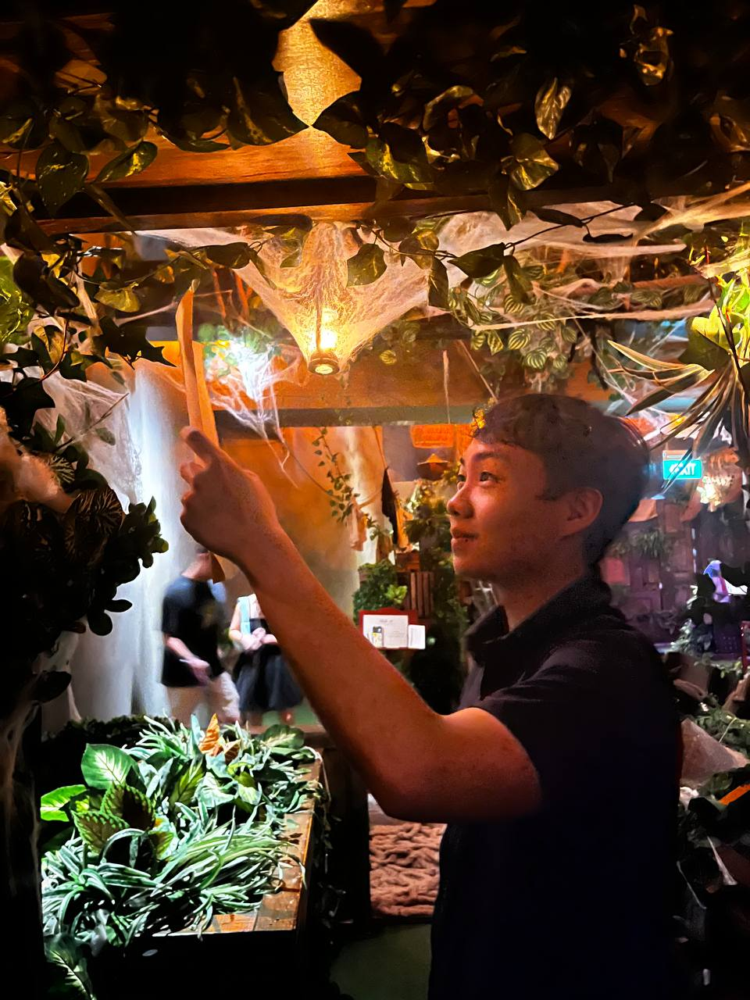

About

I like work that leaves the screen and touches the real world.
I am a Year 1 Computer Engineering student drawn to the intersection of software, hardware, and human use. My projects range from maze-solving robots and search systems to responsive web interfaces and small utility apps.
Outside class, I spend time solving coding problems, experimenting with Arduino, photographing everyday scenes, and volunteering with St John Brigade.
Open resumeStrengths
Four modes of making.
Selected work
Projects with code, constraints, and outcomes.
Community
Training cadets, practicing first aid, and showing up consistently.
My volunteer work with St John Brigade keeps my technical life grounded in people, responsibility, and calm decision-making under pressure.
View St John Brigade recordContact